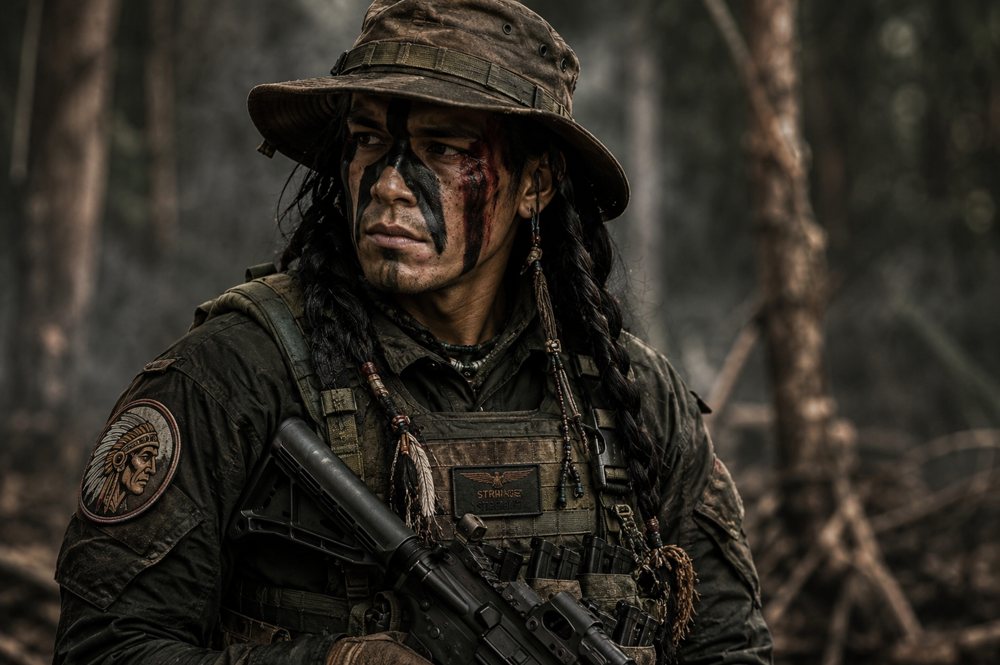

Klan Nightwolf atau klan Serigala Malam adalah sebuah klan yang memiliki reputasi mengerikan di tanah Amerika. Mereka terkenal sebagai petarung handal dan pemberani, rela mati dalam kesetiaan, dan tak mudah mundur dalam pertempuran. Pada perang kemerdekaan Amerika Serikat, klan Nightwolf turut membantu para pejuang kemerdekaan dengan kemampuan tempur mereka yang telah terlatih selama ratusan tahun, menggunakan berbagai senjata tradisional dan teknik perang kuno yang mereka warisi dari nenek moyang mereka. Setiap keturunan Nightwolf menjelma menjadi prajurit tempur yang mematikan, dan sebagian besar saat ini bergabung di dalam kesatuan khusus prajurit Angkatan Darat Amerika. Salah satu dari mereka adalah Carlos Nightwolf, mantan prajurit Delta Force yang terlibat dalam operasi-operasi Klandestin CIA.
Operasi penyerbuan taktis di Somalia yang menyasar markas utara bajak laut Somalia dan menghabisi Jahadi atau dikenal dengan nama "Mr.Killer".
Operasi penyerbuan dan penyelamatan sandera di Kongo, Afrika Tengah, dari pemberontak One-Hand.
Operasi klandestin untuk melatih dan mempersenjatai pemberontak El Muerto di Bolivia.